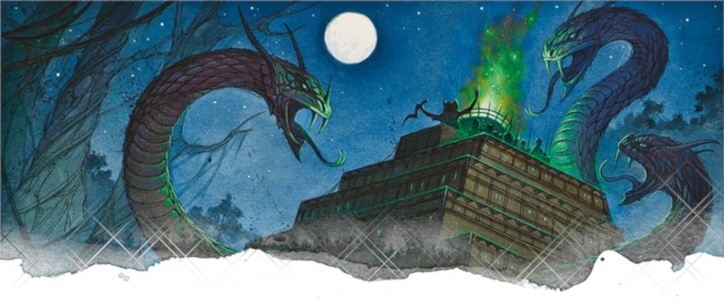

Voie du guerrier totem
Jetons un œil à la sous-classe versatile et jalonnée de choix qu'est la voie du guerrier totem. Un formidable combattant qui utilise la sagesse des esprits animaux pour comprendre et communiquer avec le monde naturel en temps de paix et puiser dans la férocité de ces mêmes esprits pour guider ses coups en temps de conflit.
Capacités de la voie du guerrier totem
La voie du guerrier totem accorde au barbare beaucoup de choix qui vous permettront de jouer votre personnage de différentes manières. Bien qu'ils ne soient pas autant personnalisables qu'un druide ou une autre classe de lanceur de sorts, les capacités dont les guerriers totem bénéficient en font de redoutables et versatiles combattants. Le barbare a accès à quatre capacités de sous-classe, en plus de ses capacités de classe, qu'il gagne aux niveaux 3, 6, 10 et 14. En résumé, vos capacités de sous-classe vous permettent :
- De choisir un esprit animal qui vous apportera des avantages en combat pendant votre Rage.
- De choisir un esprit animal qui vous donnera des pouvoirs surhumains pendant que vous voyagez.
- D'entamer un rituel pour communiquer avec un esprit animal pour en apprendre plus sur le terrain qui vous entoure.
- De choisir un esprit animal qui vous apportera encore plus de puissance en combat pendant votre Rage.
Avantages de la voie du guerrier totem
Ceux qui suivent la voie du guerrier totem deviennent les combattants les plus inébranlables du monde de D&D. Alors que tous les barbares sont résistants aux dégâts contondants, perforants et tranchants, lorsqu'ils entrent en Rage, les guerriers totem qui choisissent le pouvoir de l'Esprit totem de l'ours au niveau 3 deviennent résistants à tous les dégâts (sauf psychiques) pendant leur Rage. Cependant, si vous voulez être plus agressif, une autre option s'offre à vous : l'Esprit totem de l'aigle qui vous permet d'entrer et sortir de combat plus rapidement et moins dangereusement. Enfin, les barbares qui souhaitent jouer en équipe peuvent suivre l'Esprit totem du loup qui leur permet de devenir des meneurs de meute et donner à leurs alliés des avantages sur leurs jets d'attaque.
Cela va sans dire que la voie du guerrier totem à quelque chose à offrir à tout le monde. Presque chaque capacité de sous-classe a trois différents esprits parmi lesquels choisir et qui octroient des pouvoirs différents. Bien que certains de ces pouvoirs sont plus puissants que d'autres (on peut facilement désigner l'Esprit totem de l'ours comme meilleur choix au niveau 3 par exemple), ils ont tous des effets efficaces en combat, en exploration ou même en interaction sociale ! La capacité du guerrier totem de niveau 3 Quêteur spirituel, qui lui permet de communiquer avec les animaux, ainsi que celle de niveau 10, qui leur permet fondamentalement de lancer communion avec la nature en tant que rituel, rend ceux qui suivent la voie du guerrier totem efficaces dans d'autres domaines que le combat seul. Un supplément bienvenu pour cette classe éminemment concentrée sur le combat qu'est le barbare !
Inconvénients de la voie du guerrier totem
Le principal inconvénient de la voie du guerrier totem est que, bien qu'étant une sous-classe très flexible, elle n'est pas vraiment adaptable. Qu'est-ce que cela veut dire ? Comparons le guerrier totem à la classe de druide. Chaque jour, un druide choisit une liste de sorts préparés parmi une large liste de sorts qui leur sont disponibles de par leur classe. Incantation est une des capacités essentielle du druide, donc cela fait sens que le guerrier totem ne soit pas aussi versatile. Choisir quatre capacités sur une plage de 11 niveaux paraît honnête. Le défi est qu'aucune règle ne vous permet de changer les capacités apprises.
Imaginez cela : vous avez choisi l'option ultra puissante qu'est Esprit totem de l'ours au niveau 3, ce qui vous donne une résistance étendue au dégâts. C'est probablement l'option la plus fréquemment utile, donc cela fait sens pour vous de la prendre. Cependant, vient un moment où il serait incroyablement utile de donner un avantage aux jets d'attaques de vos alliés contre la même créature que vous attaquez. Mais vous ne pouvez pas changer de totem pendant cette Rage ; à vrai dire, vous ne pouvez jamais le changer ! Vous pouvez choisir un totem différent pour une capacité différente plus tard, mais celui que vous avez choisi au niveau 3 reste le même à vie.
Ce manque de versatilité rend le guerrier totem moins amusant à jouer qu'il ne pourrait l'être. Si vous jouez un barbare de la voie du guerrier totem et vous sentez cantonné à une seule chose (absorber les dégâts, donner un avantage, etc), alors envisagez de demander à votre MD s'il accepte le don qui suit, en partant du principe que vous utilisez la règle optionnelle des dons du Player's Handbook.
Panthéon animiste
Prérequis : Voie du guerrier totem
Vous parlez à plusieurs esprits animaux plutôt qu'à un seul. En tant qu'ami de plusieurs esprits, vous gagnez les avantages suivants :
- Lorsque vous entrez en Rage, vous pouvez décidez quel esprit animal vous octroie ses avantages. Vous pouvez changer l'animal d'une des capacités Esprit totem ou Lien totémique, mais vous ne pouvez pas changer les deux capacités à la fois.
- Vous pouvez changer l'animal de la capacité Aspect de la bête lorsque vous terminez un repos long.
Exemple de personnage
Comme la plupart des classes de D&D, le barbare ne choisit sa sous-classe qu'au niveau 3. Si vous jouez un barbare à partir du niveau 1 et pensez vouloir suivre la voie du guerrier totem plus tard, vous devriez choisir une race qui améliore votre Force et votre Constitution. Cela inclut la race des drakéïdes, qui vous donne du Charisme en plus, au cas où vous voudriez être un un combattant avec du charme (et la puissance de leur capacité de Souffle est basée sur votre Constitution, qui devrait être élevée en tant que barbare !). Vous pourriez aussi jouer un nain des montagnes, qui sont à la fois robustes et forts. Les demi-orcs sont aussi dotés d'une force physique incroyable et font d'excellents combattants de première ligne. Les humains sont aussi de bons barbares et le don gagné au niveau 1 ne fait qu'accroître leur versatilité.
Comme d'habitude, l'historique de votre personnage est à votre convenance. Vous pouvez créer toute sorte d'histoires intéressantes et de personnages excentriques en combinant des historiques inhabituels avec une classe aussi thématique que le barbare. Êtes-vous né en tant que sauvageon dans un clan nomade ? Ou étiez-vous un sage qui a décidé d'abandonner la vie académique pour devenir un combattant et se lier à l'impulsion du monde ?
Pour l'équipement, achetez une hache à deux mains ou une épée à deux mains, quelques armes de jet comme des hachettes ou des javelins et une armure d'écailles. Votre capacité Défense sans armure vous protège même lorsque vous ne portez pas d'armure, mais elle nécessite une bonne Dextérité pour rester protégé. Si vous voulez infliger des dégâts avec d'énormes armes de corps à corps, cette armure d'écailles vous aidera à garder une haute Classe d'Armure, même avec une faible Dextérité.
Le moment venu de choisir un don, Maître des armes à deux mains est un choix parfait pour un barbare agressif et il se combine bien avec l'avantage conféré aux jets d'attaques par votre capacité Attaque téméraire. Bagarreur de tavernes est un don amusant et thématique, si ce n'est exceptionnellement puissant, qui vous facilite la tâche pour vous battre sans arme.
Aussi, une fois le niveau 5 atteint dans la classe de barbare, vous voudrez peut-être bifurquer de votre voie pour vous multiclasser en guerrier pour 3 niveaux. Ce petit écart vous octroie le puissant Style de combat Armes à deux mains, la capacité Fougue pour plus d'attaques et la capacité Critique amélioré si vous choisissez l'archétype champion, qui ont tous une bonne synergie avec vos capacités offensives de barbare. D'un autre côté, faire un tour du côté de la classe de roublard permet d'obtenir une synergie efficace entre vos capacités Attaque téméraire et Attaque sournoise, même s'il faudra utiliser une épée courte ou une autre arme possédant la propriété finesse pour faire une Attaque sournoise.
Esprit totem
Quels totems choisir à quel niveau ? C'est une bonne question car chaque Esprit totem apportent des pouvoirs qui servent un rôle particulier : protecteur [tank] ou faiseur de dégâts [damage-dealer].
Si vous êtes un protecteur, vous devriez choisir l'ours au niveau 3, n'importe quel totem au niveau 6 et de nouveau l'ours au niveau 14.
Si vous êtes un faiseur de dégâts, vous devriez choisir le loup au niveau 3, l'aigle au niveau 6 et l'aigle ou le loup au niveau 14, suivant que vous préférez être mobile ou empêcher vos ennemis de bouger.
Si vous utilisez le Sword Coast Adventurers Guide et jouez dans les Royaumes Oubliés, il y a en fait deux totems supplémentaires à votre disposition : l'élan et le tigre. Les protecteurs et les faiseurs de dégâts vont adorer étendre leur liste de compétences maîtrisées en choisissant le tigre au niveau 6 et, si vous jouez un guerrier totem faiseur de dégâts, le tigre est également un excellent choix au niveau 14. Dans les parties avec de nombreux déplacements en surface, l'élan est une option exceptionnelle pour votre groupe entier.
Dons
Une fois que vous avez atteint le maximum en Force et Constitution (ou au moins dans l'un d'eux), vous pouvez augmenter votre puissance offensive ou défensive avec quelques dons. Ceux qui suivent sont de bons choix pour les barbares de la voie du guerrier totem :
Maître des armes à deux mains. Il va sans dire que ce don est l'un des meilleurs du jeu. Choisir ce don fera décoller votre potentiel de dégâts.
Combattant monté. Si vous avez tendance à chevaucher vers la bataille, ce don est une formidable aubaine. Puisque ce don vous permet de rediriger les dégâts destinés à votre monture vers vous et que vous êtes l'un des meilleurs protecteurs du jeu, vous n'avez rien à craindre pour votre monture et vous. L'avantage aux jets d'attaques contre les ennemis non montés est aussi génial.
Spécialiste des armes d'hast. Pour les barbares qui veulent infliger autant de dégâts que possible, ce don vous aide de faire bon usage du bonus de dégâts accordé par votre Rage. Vous n'avez pas beaucoup d'autres opportunités de gagner une action bonus, donc ce don est en réalité bien utile pour vous.
Sentinelle. Combiner ce don avec l'option de l'ours au niveau 14 transforme la vie de vos ennemis en un véritable cauchemar de désavantages et d'attaques gratuites.
Et, évidemment, le don Panthéon animiste présenté précédemment dans cet article ne fait pas partie des règles officielles de D&D, mais il a été littéralement créé pour cette sous-classe. Si vous voulez plus de flexibilité et que votre MD accepte les règles maisons, ce don est un bon choix !

Basé sur un article de James Haeck, traduit par Nathyouss